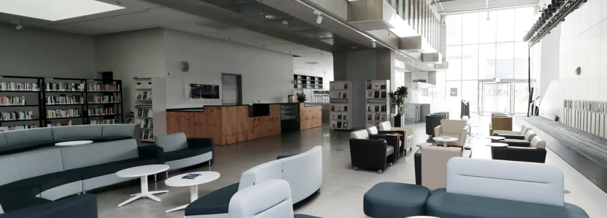
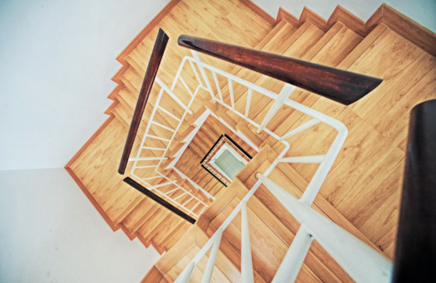
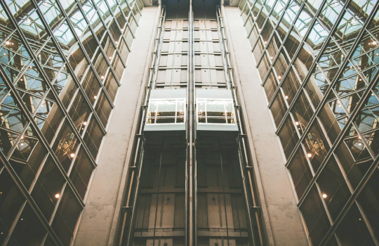

Дизайн общественных интерьеров
Кейс клубного дома Tomazzi Hall
Создать объект, подобного которому в Санкт-Петербурге еще не было, — такую задачу поставил перед собой девелопер Interior Lounge, продумывая клубный дом Tomazzi Hall. Над экстерьером комплекса работала команда одного из крупнейших архитектурных Бюро России — «Студия 11» разработал концепцию, а мы оформили интерьер 10 парадных и 3 лаунж-зон.


Начало работы и источники вдохновения
Над экстерьером комплекса работала команда одного из крупнейших архитектурных бюро России — «Студия 11», а мы оформили интерьер 10 парадных и 3 лаунж-зон.
Заказчик знал команду, следил за нашей деятельностью, поэтому никого больше не рассматривал — поручил дизайн парадных и лаунж-зон нам.